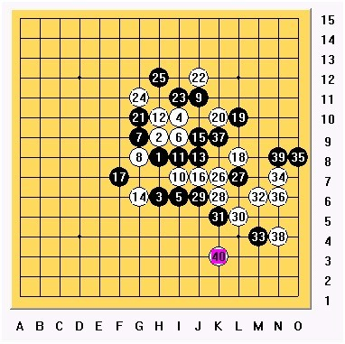
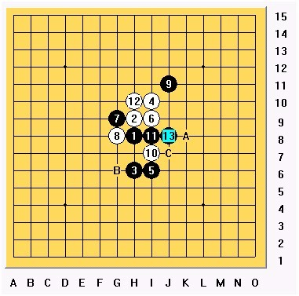
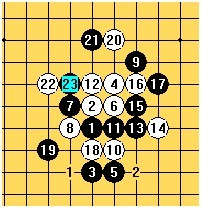
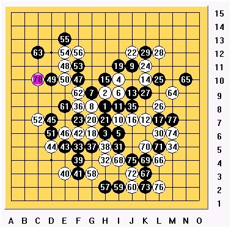
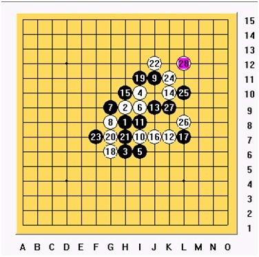
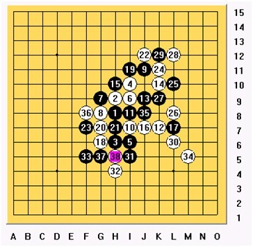

为了让更多的外国朋友们认识艾显平先生，本人受安茨委托，对艾先生做了个简短的采访，并向艾先生约了两篇全国赛棋评。英文版将刊登于10月底发行的第64期《连珠世界》上。
第一盘：对李一

这盘是小组赛最后一盘，由于李一小分比我高，如果和棋，那么我有可能不能出线，所以这盘开始的时候，我就带着必胜的想法去下这盘，这也是全国赛里我第一次最投入的一盘。我开局，要赢棋当然是走自己最熟悉的瑞星。第三手他选择交换，因为他知道我比较喜欢下黑棋，而且瑞星下黑，保和棋是比较简单的。前11手为基本走法，12手，这里给我的考虑并不多，当时选择了H10的12手，这个12黑棋非常的优势，但是后面变化一般我都知道怎么下，所以如果正常走下去，我可以在后盘获取一点机会。

当时李一选择了13手J8这个走法，如果13走G6黑棋相对和棋比较容易一点，可能他是想让我白来进攻一下，而给自己取胜的机会。14手，这里一般有A,B,C三个选择，如果走A点黑肯定会走J9，然后这个局面会变成下图这样：

这个是我不愿意的变化，白机会太小了，所以选择了这个14手在G6的变化。这个变化黑15选择了比较老的走法，比较稳健。如果这个15是我来走的话，可能会走J7。对局到18手是可以预见的走法，19手很意外，对手选择这个19，可能是想破坏我在右上方的攻击机会。
第二盘：对杨彦希
这盘是半决赛的一盘，我很希望取胜，但最后还是和棋。

这盘也是我开局，对方几乎没考虑就换了。到11手为基本走法不变，12手，我选择比较流行的12手，虽然对方如果13G6，这个走法基本为和棋，但是，由于和棋后加赛快棋，所以对手应该不会走那个变化。13手对手选择的比较老的走法，至17手基本不变。18手，这时候我选择了比较激烈的走法。

其实当时比较想对手19走2的位置，这样基本上在我预计之中，但最后当时选择了1位置，这地方让我很担心，将来F9被黑占住就很麻烦了。 20手 这里我选择了把G7先占住，这样黑棋将来的联系都断开了。然后22挡J12，23手盖在F7。24手，这里我不敢大意，因为不确定黑左下是不是有巧妙的手段攻击，后来演算一会，觉得黑是肯定没有VCT，所以24手K11。25正常应对L10 ，26L8 是想扩大右边白的优势。27断开最关键的连接。到这里，我想是不是直接去盖在J5 再L6，这样白肯定是不会输了，但是我不希望和棋，所以取消了这个想法。 然后想落在L6，但是发现这样会丢先，那么左上角黑会有很多攻击。28手选择L12，意图是给黑带点麻烦，为将来黑左边攻击制造反击。

引用：
原文由 白河愁 发表于 2009-10-20 12:54:08 :
吹毛求疵一下
2楼的最后一图"黑有1、2、3的VCF胜", 3没标上- -
 谢谢提醒
谢谢提醒 又看见了这盘让我伤心不已的棋...
又看见了这盘让我伤心不已的棋...是目前看过写的最为具体的棋评了，讲解的非常详细！支持高飞！！
挺精彩 挺深的
学习